✕

— Rajeshwar Vivekanand Trimbake —
Nature is the Creation of Energy
"My art is an abstract journey through the human nervous system, the scientific Law of Conservation of Energy, and the vast spectrum of human sensations."
Rajeshwar Vivekanand Trimbake is the creator of D.O.N Art — Design Of Nerve Art — a unique style blending the spiritual, the scientific, and the sensual into vibrant, heavily-textured acrylic canvases. His work was developed under the guidance of Jayant Kadam, Vice Principal, College of Art, Satara.
With an M.F.A. in Painting and a Diploma from Sir J.J. School of Art (2023), Rajeshwar's DONART Style is carving a distinct identity within the realms of Modern and Contemporary Indian art.
A series of bold black-and-white drawings exploring the DONART visual language through ink and mixed media on paper — organic forms, spirals, and symbolic geometry rendered in dramatic monochrome.
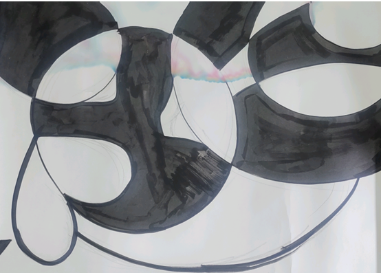
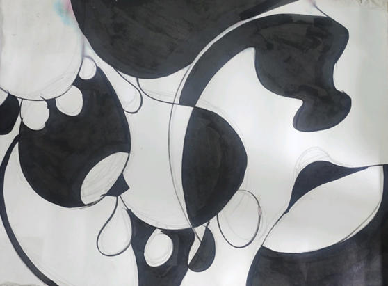
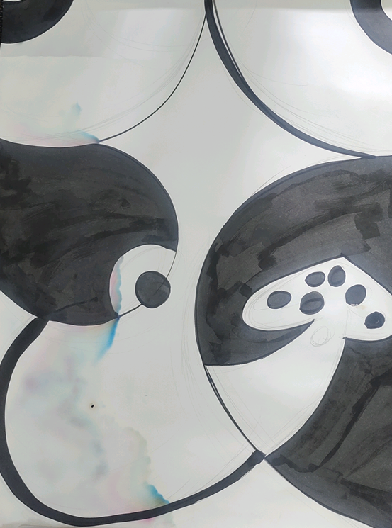
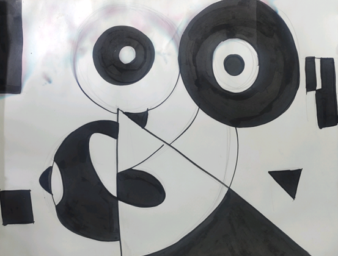
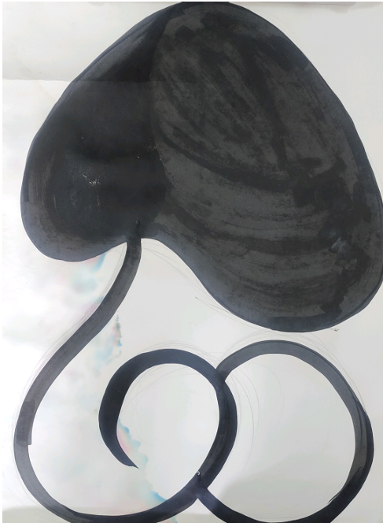
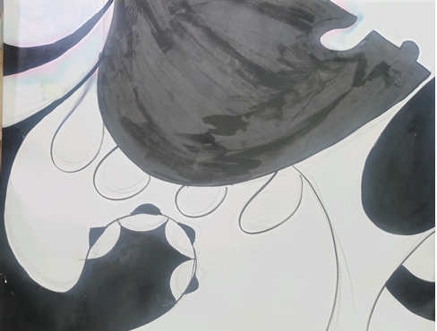
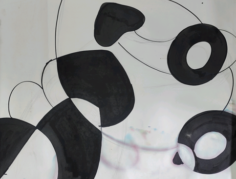
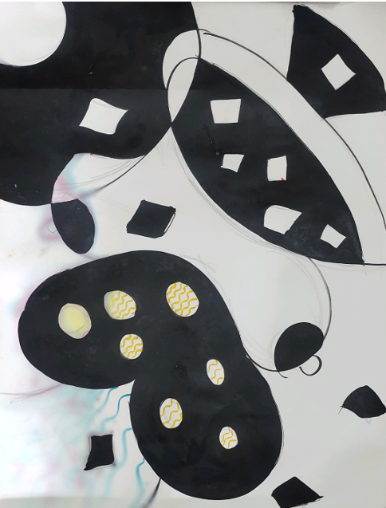
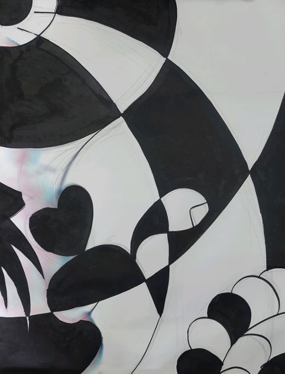
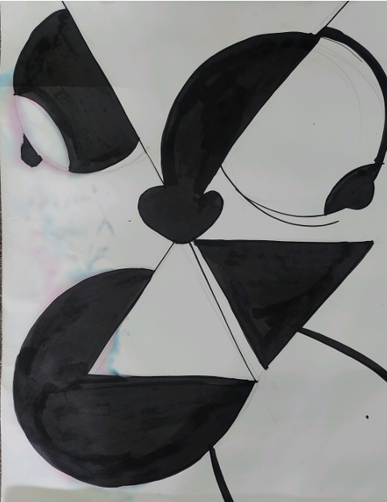
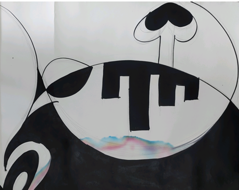
Understanding the great movements of art history helps illuminate what makes DON ART unique. Rajeshwar's work sits at the intersection of Abstract Expressionism, Symbolism, and a deeply personal Indian spiritual philosophy — here is the context that frames his practice.
Matisse was one of the most influential French artists of the 20th century, renowned for his revolutionary use of color and as the founding father of the Fauvism movement.
In 1889, while recovering from illness, his mother gave him painting supplies — and he discovered his life's calling. Around 1905, he and his colleagues exhibited paintings of bold, vibrant colors. A critic labeled them "Les Fauves" (The Wild Beasts), naming the movement.
Woman with a Hat (1905) — caused a sensation in the art world. The Dance (1910) — iconic, representing energy and rhythm of life. The Red Studio (1911) — exceptional bold use of color.
In his final years, unable to paint due to declining health, Matisse adopted the 'Gouache Découpé' technique — cutting shapes from colored paper. His 'Blue Nudes' series emerged from this practice. He described it as "drawing with scissors" or "carving directly into color."
Matisse believed art should provide peace and comfort to the mind. He passed away on November 3, 1954, in Nice, France, having changed the way we perceive modern art.
Gauguin was a renowned French Post-Impressionist known for profound contributions to modern art. His use of color and symbolic style profoundly influenced Picasso and Matisse. Born June 7, 1848 in Paris, he spent his early childhood in Peru — which left a lasting impact on his artistic vision.
In the early 1880s, following a stock market crash, he left his job to focus entirely on painting, eventually traveling to Tahiti seeking a "pure" and simple life.
In Tahiti he began using bold colors, flat shapes, and heavy symbolism. His most celebrated masterpiece — "Where Do We Come From? What Are We? Where Are We Going?" — explores the deep meaning of life and existence.
In 1888, Gauguin and Van Gogh worked together in Arles, France. Intense ideological differences led to a legendary falling out — just before Van Gogh famously cut off his ear.
Symbolism — he painted what he felt, not what he saw. Primitivism — prioritized non-Western cultures and folk art. Bold Colors — manipulated nature's colors for his own imaginative needs. He passed away May 8, 1903, now considered one of the greatest pillars of modern art.
The pivotal movements associated with masters like Matisse and Gauguin each approached the canvas with radically different philosophies. Understanding them reveals the depth of modern art's evolution.
Fauvism — 'Fauve' means 'Wild Beast.' Artists used colors aggressively and vibrantly — painting clouds red or faces green. Goal: express emotions through the sheer power of color. Key artist: Henri Matisse.
Pointillism — instead of brushstrokes, artists use thousands of tiny colored dots. From a distance, your eyes blend the dots into unified color. Rooted in the science of color perception. Key artist: Georges Seurat.
Synthetism (Gauguin) — large, flat areas of bold color separated by dark, heavy outlines. A "synthesis" of the artist's memory and feelings rather than a literal copy of the scene.
| Style | Main Element | Visual Impact |
|---|---|---|
| Fauvism | Wild, vibrant colors | Excitement & Energy |
| Pointillism | Small distinct dots | Stillness & Precision |
| Symbolism | Flat colors & symbols | Mystery & Spirituality |
Artists like Matisse and Gauguin treated color not just as decoration, but as a primary language. Matisse believed color should not be a slave to the actual color of an object — it should liberate emotion.
Gauguin chose colors that were heavier and more mysterious — deep golden yellows, terracotta reds, and dark greens reflecting the nature of Tahiti. He would paint grass pink or the sky yellow to create a dreamlike, otherworldly effect.
Warm Colors (Red, Yellow, Orange) — pop forward, grab attention, provide energy. In DONART, warm colors represent the enthusiastic energy of Pranay (romantic emotion).
Cool Colors (Blue, Green, Purple) — recede into distance, create depth and calm. In DONART, cool colors represent the tranquility after energy transformation.
Using the Impasto technique with heavy acrylic, light hits the ridges of texture and creates its own shadows. This causes colors to appear different at various times of day — the painting is alive.
Impressionism began in France in the late 19th century. The goal was not to create a photographic imitation of a scene, but to convey how light and atmosphere felt at a specific instant.
Artists painted the same cathedral or haystack at different times of day — morning, noon, evening — to capture the changing effects of light.
Short Brushstrokes — small "dabs" of paint that look unfinished close up, but form a vibrant image from a distance. En Plein Air — painting outdoors to capture true light. No Black — even shadows use deep blues or purples.
Claude Monet — father of Impressionism; his painting "Impression, Sunrise" named the movement. Pierre-Auguste Renoir — vibrant social scenes. Edgar Degas — ballet dancers and horses.
Impressionism focused on the external world — light and visual scene. Post-Impressionism (Gauguin, Van Gogh) turned inward toward emotions, symbols, and structured forms.
Modern Abstract Art does not depict the world as it appears to the eye — it reveals it through ideas, energy, and emotions. By stripping away the identity of objects, it focuses entirely on colors, lines, and shapes.
Wassily Kandinsky — considered the first purely abstract artist. He believed that, like music, colors possess a spiritual impact that does not require an object to be understood.
Action Painting — the physical movement of the artist is crucial. Jackson Pollock created masterpieces by dripping and splashing paint — a reflection of internal energy.
Color Field Painting — large, flat areas of color immerse the viewer in depth of hue (Mark Rothko).
Geometric Abstraction — precise use of squares, circles and lines focusing on balance and mathematical beauty.
Many modern abstract artists connect their work to "neurological energy" and biology — exploring philosophies that link the nervous system to artistic expression. This is precisely the foundation of the DONART Style.
The great techniques of art history directly inform the DONART style. Understanding these methods provides a deeper perspective on how art is conceived and created.
Impasto — paint applied in very thick layers. Brush or palette knife marks remain visible, creating a 3D effect. Van Gogh famously used this in 'The Starry Night.'
Gauguin was a master of symbolism — the artist depicts not what is seen, but what is felt. Colors represent specific moods or spiritual meanings. In DONART, yellow might represent the vitality of the lingam, while blue represents the spinal cord and cool Pranay energy.
Modern artists use colors and shapes not to represent a specific object, but to express pure energy and ideas. The use of heavy textures and Heavy Body Acrylics has become central to contemporary abstract practice — and is the primary medium of Rajeshwar Trimbake.
The interplay of light and shadow, brushing techniques, the illusion created through complex color patterns, and the visible texture are the soul and fundamental core — the precision — of the DONART paintings.
Nature is the creation of energy. Energy is never destroyed; it is only transformed. Man is a confluence of the five basic elements — Panchamahabhutas. The various experiments of lovemaking (Kam-kriya) and the sensual aspects of man and woman have been depicted through a specific ornamental form, creating the DONART Style.
Every brushstroke maps the neural pathways of human emotion. The brain and the body are united through what the artist calls "Pranay" — the exchange of emotion through the nervous system — from head through neck down the spine.
The contact between warm and cool colors from the color wheel represents "chromatic lovemaking" — rangatmak pranay kriya — energy transforming into art on the canvas. Bright colors meet tranquil blues in every composition.
The crown (Mukut) on the woman's head represents the glans. Breasts are depicted as ovaries. Symbolic arrows and sacred geometry carry layered biological and spiritual meaning in the DONART visual language.
"Each canvas is a transformation of energy — a unique piece that will never be replicated."
"Energy is never destroyed — let us transform it into art together."